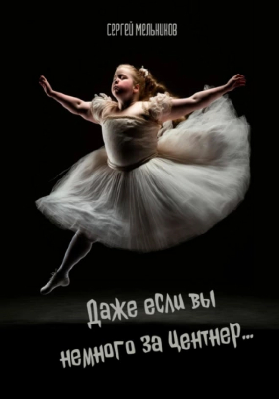

Увлекательное путешествие в разум и сердце

Даже если вы немного за центнер...
Книги для подростков, Современная русская литература
Описание
Она была... Изгоем. Толстая, некрасивая, замкнутая девочка. Никто не хотел с ней дружить. Но тут в классе появилась новенькая и затащила её в такой водоворот событий, что только держись. Невыдуманная история. Посвящаю памяти Тамары Николаевны Байсак, режиссёру Комсомольского Драматического Театра школы №45 г. Севастополя
-
Объем:7 стр.
-
Возрастное ограничение:12+
-
Дата написания:2023 г.
-
видеовариант
-
аудиокнига